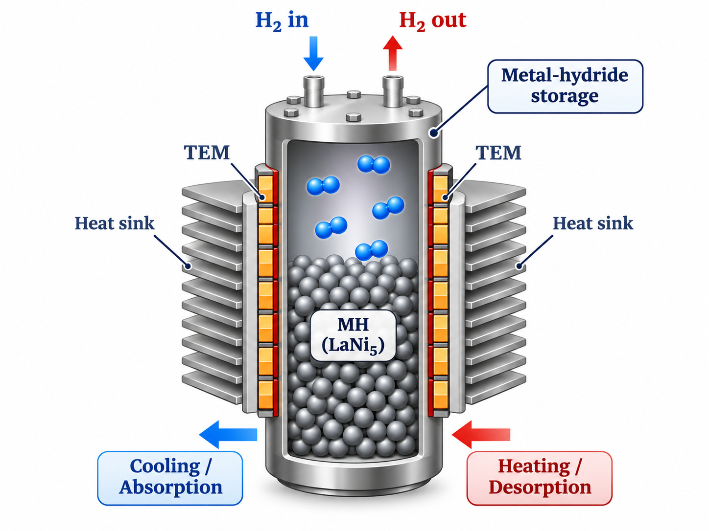
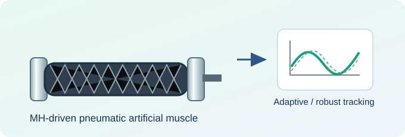
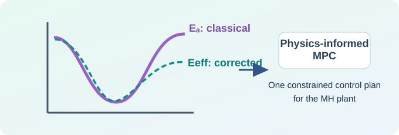
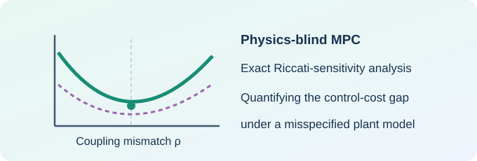

Metal Hydride (MH) Energy ManagementPhysics-Informed Transport Modeling, Parameter Estimation, and Predictive Control How does the fidelity of a physical model influence predictive-control decisions in a hydrogen energy system? My research on metal-hydride (MH) systems develops from experimental reactor and hydrogen-pressure actuation studies to learning-based robust control and quantum-transport-informed model predictive control (MPC). This track investigates how physical transport knowledge can inform estimation, prediction, performance analysis, and ultimately energy-system operation. Physical systems → Learning & robustness → Physics-informed MPC → Sensitivity & guarantees → Energy integration
Research Themes and Selected WorkThe research is organized around five related questions, connecting physical understanding to control-oriented models and energy applications. (a) MH Physical Systems and Control PRIOR WORK · 2013–2015 How do hydrogen absorption/desorption and thermal actuation shape the behavior of a controllable MH reactor? Earlier research investigated LaNi5–H2 reactors, thermoelectric temperature management, and hydrogen-pressure actuation. These studies established a physical-system basis for later questions about model uncertainty and predictive control. Selected prior studies include thermoelectric-module control of MH reactors and MH-driven pneumatic actuation. (b) Learning-Based Adaptive Robust Control PUBLISHED · IEEE TIE 2022 Can safe, compliant actuation be maintained despite nonlinear dynamics and changing environments? We develop learning-based adaptive robust control (LARC) for an MH-driven pneumatic artificial muscle. Sparse Bayesian learning supports model identification and adaptation, while robust feedback addresses tracking under varying loads. The study reports physical implementation and tracking experiments. (c) Quantum-Transport-Informed Prediction and MPC Under review · IEEE TCST When does microscopic transport physics become important for macroscopic control decisions? We integrate a temperature-dependent effective-barrier correction with physics-constrained Huber weighted least-squares estimation and MPC. It examines estimator consistency, local feasibility and stability results, local stability of a nonlinear kinetic plant, and model-mismatch consequences through simulation. Under the current platform's 298–333 K operating range and 1–8 bar pressure limits, the reported closed-loop cost reduction is at most 0.3%. At a projected 120 K, the simulated reduction is 27–93%, depending on the normalized input bound. The latter regime is beyond current hardware capabilities and is not a validated hardware result. (d) Control Optimality and Riccati Sensitivity IN PREPARATION · IEEE TAC How suboptimal is physics-blind MPC when the physical plant differs from the prediction model? A complementary theoretical manuscript studies the performance consequences of model mismatch through Riccati-sensitivity analysis. Its focus is a local control-cost expansion and conditions under which mismatch leads to a quantifiable performance gap. This work develops a control-theoretic question motivated by transport-model fidelity; its results should be interpreted under the assumptions of that study. Working title: How Suboptimal Is Physics-Blind MPC? An Exact Riccati-Sensitivity Analysis. This is a prepared research manuscript, not a published or accepted result. (e) Toward Advanced MH Energy Management FUTURE RESEARCHHow can physically faithful models and reliable controllers support safe and efficient hydrogen-energy operation? The longer-term direction connects transport-aware modeling, identification, predictive control and systems integration. Open research topics include coupled thermal–hydrogen dynamics, partial-state estimation, hysteresis and degradation, multivariable modeling, online adaptation with time-varying temperature, and hardware-in-the-loop validation. These directions are future research objectives; the current TCST simulations do not yet establish system-level energy-management performance or hardware deployment in cryogenic regimes. Research PerspectiveAt the center of this track is a control-oriented scientific question: When is improved physical-model fidelity worth incorporating into the decision process? The answer need not always favor a more complex model. In some operating regimes, classical descriptions may be sufficient; in others, omitted transport physics can alter the control input and closed-loop behavior. Scope and relationship to other work. This MH energy-management track is distinct from the parallel research track on World Models and Compliant Intelligence. The two share interests in estimation, uncertainty, and control, but address different physical systems and scientific questions. The MH track uses physics-informed, control-oriented models; it does not claim the same learned latent-world-model architecture as Deep SSSM.
Selected LinksIEEE TIE (2022)Quantum-MH overviewComplete publicationsParallel research track |